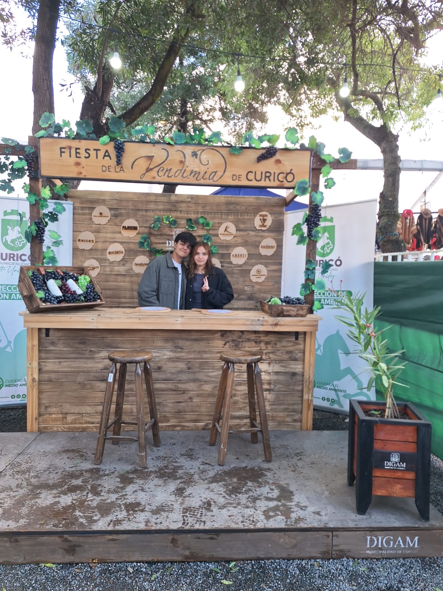
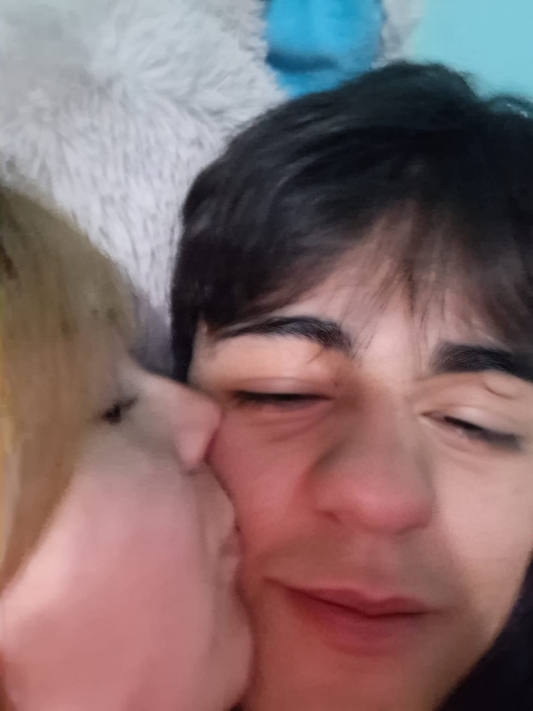

Espero que te guste mucho esto y perdón si no funciona muy bien jsjs.
Te amooo ❤️
Un 9 de marzo de 2026 empezó nuestra historia de amor. La verdad, me acuerdo de ese día como si fuera ayer. Estaba nervioso, pero al hablarte sentí una calma y una confianza como si hubiéramos coincidido toda la vida. Pasaron los días y te invité a estar en un recreo juntos. Te mentiría si dijera que no estaba nervioso. Antes de ese recreo hablé con el Pedrito y me dio ánimos para que todo saliera bien. Al verte en la cerca de la cancha me puse tan feliz solo de verte, y la verdad esa sensación sigue hasta el día de hoy. Hablabas de las clases, me contabas anécdotas y, bueno, yo hablaba un poco porque simplemente quería escucharte. Al pasar los días, solo quería pasar un recreo más contigo. En mi mente repetía: “Hoy le diré que pasemos juntos”. En el tercer recreo que pasamos juntos, me acuerdo de que te di un abrazo al despedirme. En mi mente pensaba cómo podía ir tan rápido al darte un abrazo. Me sentí muy nervioso y, al bajar, solo tenía una sonrisa de oreja a oreja. Solo pasaron un par de días para poder salir al centro. Ese día quedó enmarcado en mi vida como “el día que me enamoré de ti”. Al momento de llegar a los sushis, solo podía mirarte y pensar: “Qué hermosa se ve hoy”. Al llegar al mall me puse más nervioso, sobre todo cuando fuimos al Jumbo y tuve ese impulso de decir: “Me gustas”. Recuerdo exactamente cómo fue regalarte las primeras flores, planear que fueras a Ripley para darte esa sorpresa. Al momento de dártelas, tu carita fue tan tierna y bella. Ese abrazo que me diste siempre lo recordaré. Cuando te fui a dejar a tu casa, estaba feliz de poder pasar el día entero contigo. Llegué a la casa solamente a soñar contigo y decidir que quería estar contigo. El 19 de marzo, específicamente a las 17:38, fue nuestro primer beso. Yo estaba realmente nervioso. Antes de eso te di besos en la mejilla y te sonrojabas y te reías nerviosa. En un momento, por unos cabros chicos gritando, nos fuimos a la plaza al lado del colegio, donde en esa banca nos dimos nuestro primer beso. Nunca en mi vida había sentido esa sensación de emoción y nervios. Algo de eso sigue hasta hoy; cada vez que nos damos besos me sigo sintiendo muy emocionado. Después llegó la Vendimia, donde también salimos, nos dijimos "te amo" y bailamos al ritmo de María José Quintanilla. Después de esos días, en el colegio todo fue distinto porque andábamos de la mano o del brazo, nos dábamos abrazos y besos, los cuales son un curita para mi alma. Los días pasaron y llegó el día de entrar a tu casa. Te preguntarás: ¿Por qué recalca esto? Bueno, tiene una respuesta simple: fue la primera vez que estuvimos abrazados acostados y, bueno... la primera vez que pasó lo que hasta el día de hoy nos da vergüenza decir (pero igual fue uno de los mejores días de mi vida 🫦). Pasaron los días y empecé a planear la pedida de pololeo. Siempre te dije el 15 porque ya lo tenía planeado para esa fecha. Hablar con tu mami fue el inicio para que el plan saliera a la perfección. Al momento de ir a comprar las cosas me sentía súper feliz, pensando en cómo sería tu carita de felicidad. Tu hermano y su novia me ayudaron en el proceso de armar todo. Recuerdo que estaba tan nervioso que ni siquiera podía inflar los globos jsjs, pero me ayudaron en todo y me siento muy agradecido por eso. Mientras pasaba eso, le pedía al Pedrito que por favor me mandara fotos en su casa, viendo cosas al azar para que me creyeras que no nos veríamos. Y bueno, la Sofía y el Rodrigo en todo momento siguieron lo planeado. En el momento en que llegaste al segundo piso, escuchaba cómo no querías pasar y yo estaba impaciente esperando que abrieras la puerta. Y bueno, en la galería de fotos está el video jsjs. Cuando te tuve al frente, te dije todo lo que sentía y siento, y la pregunta que tanto esperé decirte: “¿Quieres ser mi novia?” Después pedimos pizza junto con tu hermano y estaba muy feliz de que al fin podía decir: “Tengo a la novia más bella del universo”, cosa que aún sigo pensando y siempre pensaré. Pasaron los días, algunos buenos y otros malos, pero siempre estuvimos juntos y seguimos juntos. Seguimos viendo series, saliendo y estando juntos en los recreos. Viniste a mi casa, conociste a mi entorno y a la familia más importante para mí. A mi mamá le caíste y le caes súper bien; se nota que te quiere demasiado jsjs. Y llegó nuestro primer mes juntos. Te regalé ese ramo buchón y quería regalarte otro de flores reales, pero no pude porque no alcancé a comprarlo. Vimos series, o bueno, “ver” series (cosa que disfruté mucho 🫦). Después de ese día no hicimos mucho, ya que estábamos muy ocupados con temas del colegio y asuntos personales de cada uno. Y bueno, quedan hartos momentos juntos, los cuales guardo en mi corazón con un amor muy grande. Espero seguir escribiendo esta historia juntos, poder conocer tantas cosas más y que se me acaben las hojas de tanto escribir nuestra historia jsjs. Te amo con todo mi corazón, mi niña hermosa, y gracias por leer tremendo texto jsjs. ❤️

Nuestro primer recuerdo ❤️
Uno de mis momentos favoritos contigo ❤️

Mi foto favorita de nosotros ❤️
Presiona el botón para descubrir una razón ❤️
Presiona el botón para descubrir un mensaje ❤️